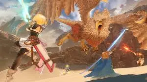

- Overview: *Granblue Fantasy: Relink* is an action-RPG developed by Cygames and published by Cygames and XSEED Games. It is based on the popular *Granblue Fantasy* mobile game and serves as a standalone entry in the series. Players embark on an adventure in a fantasy world filled with airships, mythical creatures, and intense battles. The game features real-time action combat, allowing players to control a variety of characters, each with unique abilities. It aims to bring the grand scale of the *Granblue Fantasy* world to life on consoles, with beautiful visuals and expansive, open environments.
- Developer: Cygames
- Publisher: Cygames, XSEED Games (in the West)
- Studio: Cygames
- Platform: PlayStation 4, PlayStation 5, Microsoft Windows
- Release Date: February 2023 (Global release)
- Average Price: Around $59.99 (Price may vary based on platform and region)
- Ratings:
- Metacritic: 80/100 (PlayStation 5 version)
- Steam: 80% Very Positive (Based on user reviews)
- Important Features:
- Real-time action combat with fluid, fast-paced battle mechanics, including combos and powerful special attacks.
- Playable characters from the *Granblue Fantasy* universe, each with unique skills, weapons, and abilities.
- Expansive and detailed environments, from lush forests to grand cities, designed with a high level of artistry.
- Co-op multiplayer mode, allowing players to team up with others to take on difficult dungeons and boss battles.
- Beautiful anime-inspired art style with highly detailed character models and environments that bring the world of *Granblue Fantasy* to life.
- Engaging story that expands on the lore of the *Granblue Fantasy* universe, exploring the adventures of the protagonist, Gran, and his companions.
- Criticisms:
- Some players feel the combat system can become repetitive after extended playtime, as there are limited ways to diversify combat styles.
- The pacing of the story might feel slow for newcomers unfamiliar with the *Granblue Fantasy* mobile game.
- While the visuals are stunning, some critics have noted that some environments could feel empty or lack interactivity.
- User Reviews: Generally positive, with praise for the beautiful visuals, engaging combat system, and faithful adaptation of the *Granblue Fantasy* universe. However, some players have criticized the game's pacing and repetition in combat.
- Sequel/Expansion: As of now, *Granblue Fantasy: Relink* is the most significant console release in the *Granblue Fantasy* series. While a sequel hasn't been confirmed, Cygames has teased possible expansions or updates to the game.
- Genre: Action-RPG, Co-op Multiplayer
- Recommended for: Fans of the *Granblue Fantasy* series, those who enjoy action-RPGs with real-time combat, anime-inspired art styles, and cooperative multiplayer gameplay.